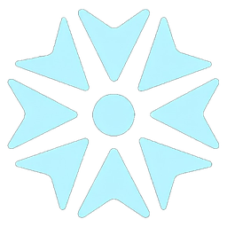

Aethra (Αἴθρα) is a Greek word associated with a clear, bright sky and radiance. It evokes the idea of clarity, openness, and a space in which things can be seen from a wider perspective.
That idea is at the heart of Aethra.
We believe that some of the most interesting ideas exist between disciplines, in the spaces where they overlap but are rarely brought together. A problem viewed through the lens of science may reveal something entirely different when approached through art. Technology can meet philosophy. Design can meet mathematics. History can meet innovation. When these perspectives come together, they do not simply coexist. They illuminate one another.
Our thesis is that interdisciplinary thinking is the key to the future.
The world is not divided into neat academic disciplines. The problems we face are complex, interconnected, and constantly changing. Yet much of the way we learn and create is still organised around boundaries between fields. Aethra was founded to question those boundaries and create environments where they can be crossed.
In this sense, Aethra represents more than a name. Like a clear sky that allows light to travel freely, we want to create a space where ideas can move freely between disciplines. Where one field can illuminate another. Where curiosity is not confined by expertise. And where the most valuable insight may come from a connection that nobody thought to make before.
We believe the future will be shaped by people who do more than master individual disciplines. It will be shaped by those who can connect them.
Aethra exists to build those connections, to create the spaces where disciplines meet, and to bring clarity to the possibilities that emerge between them.